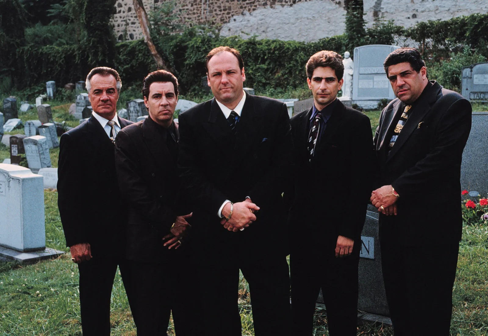

TTO
ABOUT
CONTACT
SERVICES
Brand Identity
Art Direction
Naming
Packaging
Print Design
Publications
Signage/Wayfinding
Website Design T T O acknowledges the Wurundjeri people of the Kulin nation, the traditional custodians of this land, and pay our respect to the Wurundjeri elders, past, present and emerging. We collaborate with both new and established brands and individuals who value their craft as much as we do. Get in touch to discuss your next project, explore collaboration opportunities, learn more about our work and approach, or simply have a quick chat.
Linkedin Lucas Sakell
lucas@tto.works
Matthew Francis
matthew@tto.works
T T O acknowledges the Wurundjeri people of the Kulin nation, the traditional custodians of this land, and pay our respect to the Wurundjeri elders, past, present and emerging. Design by Charles Hoppe
Website by Peter White